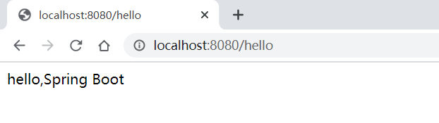
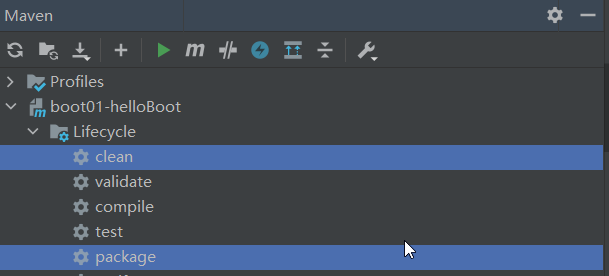
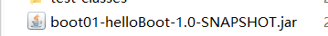

SpringBoot2-基础入门
1.Springboot2入门
1.hello Boot
需求：浏览发送/hello请求，响应 Hello，Spring Boot 2
- 创建一个Maven项目
- 引入依赖
1
2
3
4
5
6
7
8
9
10
11
12
13
14
| <parent>
<groupId>org.springframework.boot</groupId>
<artifactId>spring-boot-starter-parent</artifactId>
<version>2.3.4.RELEASE</version>
</parent>
<dependencies>
<dependency>
<groupId>org.springframework.boot</groupId>
<artifactId>spring-boot-starter-web</artifactId>
</dependency>
</dependencies>
|
- 编写启动类
1
2
3
4
5
6
| @SpringBootApplication
public class MainApplication {
public static void main(String[] args) {
SpringApplication.run(MainApplication.class, args);
}
}
|
4.在浏览器访问

2.简化部署
- 导入配置
1
2
3
4
5
6
7
8
| <build>
<plugins>
<plugin>
<groupId>org.springframework.boot</groupId>
<artifactId>spring-boot-maven-plugin</artifactId>
</plugin>
</plugins>
</build>
|
2.clean 和 package

3.本地查看jar包
